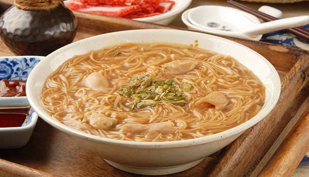
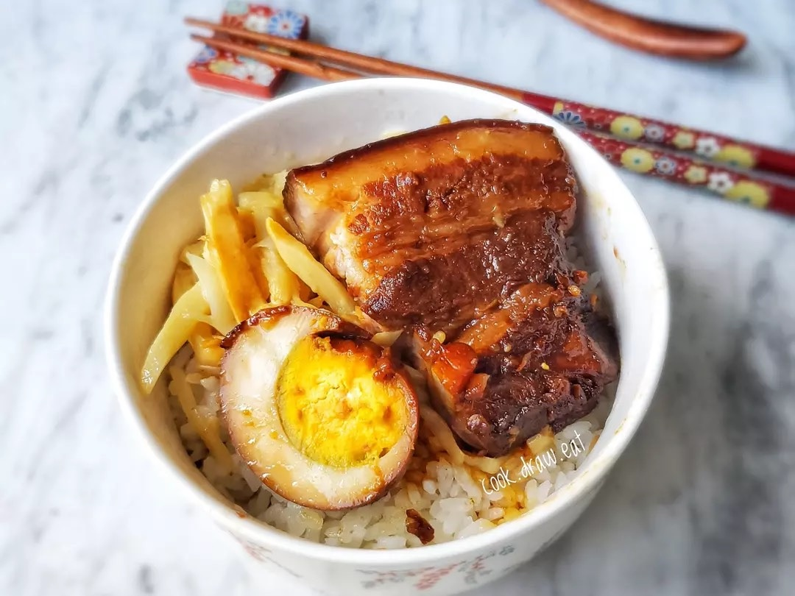
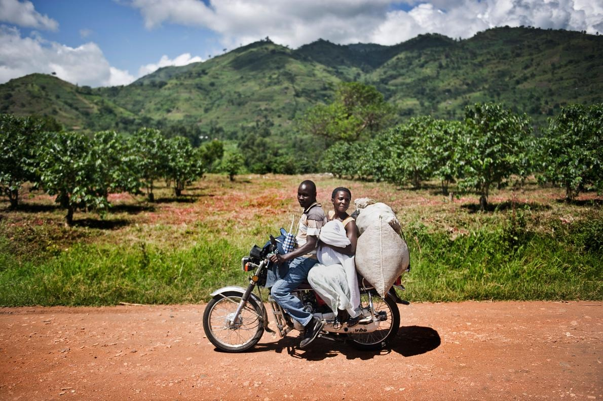
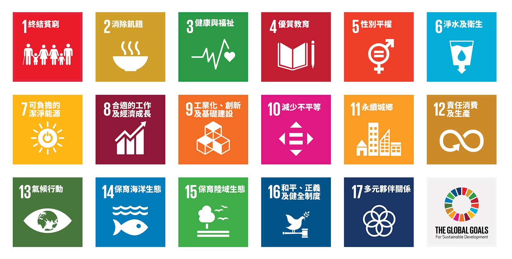

和美高中・115-1 永續小食堂
為什麼
跨國企業
壓榨小農
2026.09.17


作為三餐，你的排列順序為何？
早餐喝咖啡或茶，已經是跨文化的現象。
早餐喝茶的方式，與其他時間不同。
咖啡的消費量又遠大於茶
2026 年版
咖啡產業
的現況
全世界一年喝掉多少？台灣呢？價格又是誰在決定？
全球：一年喝掉 1.8 億袋
2024/25 咖啡年
2024/25，年增 4.3%
2021/22 – 2024/25
產量 183.6、消費 180.6
1 袋 = 60 公斤；咖啡年為 10 月至隔年 9 月。來源：ICO Coffee Market Report, August 2026, Table 3。
誰在喝？各區域消費量（百萬袋，2024/25）
| 區域 | 消費量 | 占比 |
|---|---|---|
| 歐洲 | 54.8 | 30.1% |
| 亞洲與大洋洲 | 48.9 | 26.8% |
| 北美洲 | 30.2 | 16.6% |
| 南美洲 | 28.8 | 15.8% |
| 非洲 | 13.3 | 7.3% |
| 中美洲、墨西哥與加勒比海 | 6.3 | 3.5% |
| 全球 | 182.2 | 100% |
來源：ICO Coffee Market Report, August 2026, Table 3。占比為依表內數字計算。
台灣：幾乎全部進口
2024 年，歷年最高
約 1,000 公噸上下
2025 年；2019 年為 121 杯
2025 年；2019 年為 781 億
來源：經濟日報 2025-02（財政部進口統計）；農傳媒（農業部資料）；未來流通研究所〈台灣「咖啡經濟」產業規模與趨勢動向〉2026-04。
全台咖啡館 4,165 家（2022 年）
台北市每平方公里
就有 3.4 家咖啡館
來源：自由時報財經週報 2024-06-02，引財政部營業登記資料。
生豆價格：誰決定？
2025-11-11 高點
2026 年 8 月平均
2026 年 8 月平均
2026 年 8 月平均
ICO 綜合指標價（I-CIP）。來源：ICO Coffee Market Report, December 2025 與 August 2026。
來種咖啡好不好？
要種咖啡之前，
先了解一下咖啡產業的背景
▶
剝削農民、傷害動物跟環境！風靡全球的咖啡，為何爭議這麼多？
志祺七七《食物知識大拼盤》EP 033・YouTube，另開新分頁

身為咖啡農民的煩惱…
你剛好有土地可以種植更多咖啡樹，但是收成時人數不足。
要額外花錢請臨時工，還是叫上學的小孩請假一個月在家幫忙？
盤商依照紐約生豆交易市場的價格向你收購豆子，但是今年供給太多，價格很糟，賣了賠錢，不賣賠更多。怎麼辦？
你細心照顧種植的豆子是精品級的，可是乏人知曉，只能用一般價格賣給盤商。怎麼辦？
為什麼我們知道，
他們不知道？
為什麼跨國企業要壓榨小農？執行長是大魔頭嗎？
當你投身AI機器人製造產業，賺了20億。是否應該卸甲歸山林，好好享受人生？
馬克斯與恩格斯
資本主義的強制競爭原則
古典經濟學派認為市場處於競爭是常態；馬克斯認為市場總是會有最大者勝出。
觀察現實，你同意哪一邊？
研究一下SDGs
聯合國永續發展目標 17 項
